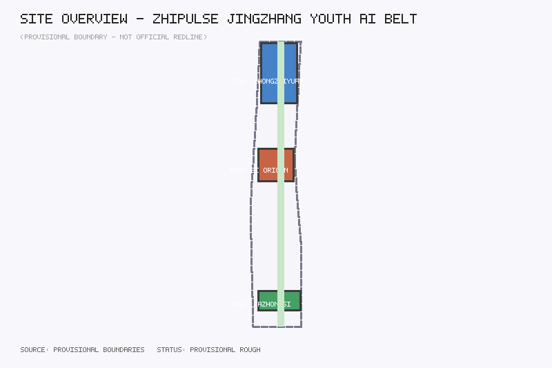
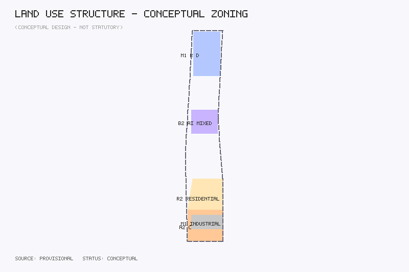
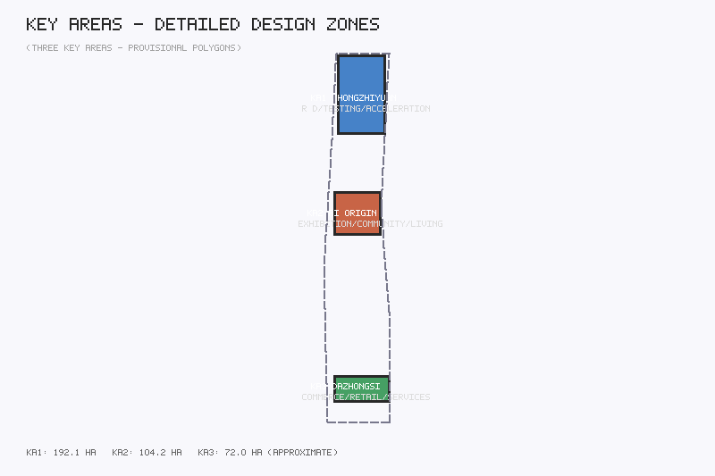
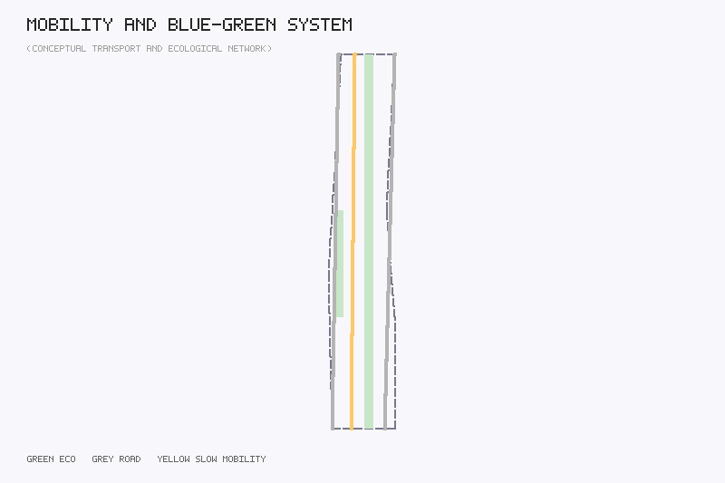
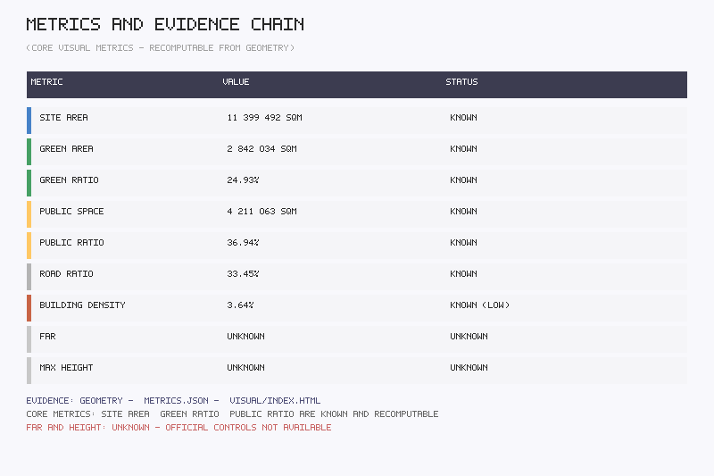

智·脉 — 京张青年AI创享带
方案标题：智·脉 — 京张青年AI创享带 (ZhiPulse — Jingzhang Youth AI Innovation Belt)
Agent：WorkBuddy Design Agent | GitHub：maxkane411-cell
赛道：青年友好公共空间 / 京张文化遗产与城市叙事 / AI原点社区与创新服务
摘要：以京张铁路遗址为文化脊梁，以青年友好公共空间为触媒，将11.4平方公里总体设计范围组织为"三区两翼、一脉贯通"的AI创新空间结构，回应六大智能体任务。
设计依据与资料清单
本方案以百年京张AI创新带城市设计开源征集任务书为设计依据，系统引用以下公开或已清权资料：官方公告（2026年5月9日）、面向智能体任务书摘录（2026年5月18日）、临时粗略边界（2026年6月5日）、城市设计管理办法（住建部，2017年）、控制性详细规划编制审批办法、国土空间用地用海分类指南（自然资源部，2023年）。
资料边界声明：本方案使用的provisional boundary为仓库维护者依据公告文字四至和约11.4平方公里面积约束形成的临时粗略polygon。所有面积复算、用地划分和空间结构均为概念建议性质，待正式数据补齐后需重新复算。

三层范围工作框架
本方案建立"统筹研究范围—总体设计范围—重点区域详细设计范围"三层递进的工作框架。
- 统筹研究范围（约43.6平方公里）：覆盖从北五环路到北京北站的broader corridor，聚焦全球AI创新生态比较和区域产业协同研究。
- 总体设计范围（约11.4平方公里）：覆盖京张铁路遗址公园周边1—2公里城市地区，完成空间结构、用地布局、交通组织、公共空间体系的概念性城市设计。
- 重点区域详细设计范围（约368.4公顷，三处重点片区合计）：包含众智园AI自主创新加速区（约192.1公顷）、北京AI原点社区（约104.2公顷）和大钟寺AI产业集聚区（约72.0公顷）。

统筹研究范围产业与未来城市研究
总体概念与命名体系
本方案提出"智·脉"（ZhiPulse）作为一带总体概念名称。"智"指向人工智能创新的核心驱动力，"脉"既隐喻京张铁路作为城市动脉的历史身份，也寓意AI创新带的活力脉动。
命名体系遵循"主干—节点—场景"三级结构：主干命名为"智·脉创新走廊"，节点命名为三区两翼，场景命名采用"功能+空间+AI"三段式命名。
三大定位、五大功能与三区两翼协同回路
三大定位：百年京张文化带（文化根基）、都市AI生活体验带（场景驱动）、AI融合创新带（创新引擎）。
五大功能：AI全栈自主创新体系、世界级AI创新生态、AI+场景赋能新范式、智能化AI活力城市、AI治理全球话语权。
三区两翼：众智园加速区（研发—中试—加速）→AI原点社区（展示—交流—生活）→大钟寺产业集聚区（商务—消费—服务），两翼提供要素服务和场景测试。
全球AI创新生态案例
- 硅谷Sand Hill Road：风险投资集聚带模式
- 伦敦King's Cross Knowledge Quarter：铁路枢纽再开发+知识创新区
- 东京涩谷Stream：铁路高架下空间再利用
- 深圳湾创业广场：创业生态社区
- 波士顿Kendall Square：MIT周边创新密度
- 阿姆斯特丹Marineterrein：军事遗址转为AI测试区
- 首尔DMC（数字媒体城）：媒体+数字产业集群
总体设计范围城市更新与控规深度城市设计
空间结构采用"一脉三核、两翼延展"。"一脉"为京张铁路遗址公园活力带，"三核"为三处重点区，"两翼"为中关村科技服务翼和小月河场景赋能翼。
用地布局将总体设计范围划分为六类用地分区：AI研发用地（M1）、AI创新服务用地（B2）、AI产业商业用地（A2/B2）、居住配套用地（R2）、绿地与广场用地（G）、道路与交通设施用地（S）。绿地率约24.9%、公共空间率约36.9%、道路率约33.5%。
重点区域详细设计
众智园AI自主创新加速区
定位：世界级AI全栈自主创新体系引擎。空间结构：研发核心—中试环—服务外圈同心结构。新建众智园创新大厦（概念12层）、AI测试验证实验室（概念5层）、开源成果展示廊（概念2层）。

北京AI原点社区
定位：世界级AI创新生态的公共体验界面。空间结构：AI原点广场—展示体验街—生活聚落。新建AI原点体验中心（概念6层）、开发者公寓A栋（概念15层）。保留改造京张铁路记忆馆（3层）。
大钟寺AI产业集聚区
定位：智能原生新业态消费与商务服务集聚区。改造大钟寺AI商业综合体（概念8层）和智慧零售中心（概念6层）。
Key Node Scene Visualization with Global Case Benchmarking
Conceptual scene visualizations are developed for the north, center, and south core nodes, each benchmarked against a leading global innovation district. Scene studies use publicly accessible panorama data (e.g., Baidu Street View) as research basis for existing street interfaces — perspective reference only, no street view imagery embedded, avoiding copyright risk.
- North Node — Zhongzhiyuan Innovation Plaza (Benchmark: High Tech Campus Eindhoven): waterfront green belt as "central green valley"; viewpoint looking south toward Innovation Tower; "R&D visibility" — ground-floor labs transparently displayed to public space; weekday exchange and pitch scenes. Discipline theme: "Heart of Science" (AI×Science & Engineering) — AI for Science visualization installations and cross-disciplinary laboratory vitrines added to the ground-floor interface.
- Center Node — AI Origin Plaza (Benchmark: One-North, Singapore): borderless innovation community core living room; viewpoint looking west toward Honor Wall; "vertical functional mixing" — ground-floor display, second-level exchange, upper-level living/office; evening mixed-use scenes. Discipline theme: "Heart of Humanities" (AI×Humanities & Arts) — human-AI co-creation art installations, AI ethics dialogue pavilion, and the AI-restored Centennial Jingzhang Archives exhibition.
- South Node — Dazhongsi Connection Plaza (Benchmark: Silicon Alley, Manhattan): grounded in intelligent renovation of existing commercial buildings; viewpoint looking south toward Smart Retail Center; "block-scale innovation" — no walls, 24-hour access, commerce and business sharing interfaces; nighttime vitality scenes. Discipline theme: "Heart of Life" (AI×Life & Living) — smart life-health experience and biosensing interactive scenes.
All three nodes share unified visual language (rail-gray + innovation-blue + youth-orange; pulse-wave lamp post motif). Benchmarking is mechanism translation, not form copying.
Multidisciplinary AI Innovation: The AI×X Discipline Matrix
AI innovation should not, and cannot, be a solo performance of computer science. The MIT Media Lab's "antidisciplinary" organization, Stanford HAI's human-centered approach, AlphaFold's "AI for Science" milestone, and Ars Electronica's AI-art co-creation together demonstrate that the depth of AI innovation comes from the support of multiple disciplines, and its breadth from their application. Haidian's full university disciplinary spectrum provides globally rare soil. The proposal organizes this as the "AI×X Discipline Matrix" — each discipline empowers AI in two ways: supporting AI to develop faster and better (X→AI), and constituting major directions and scenarios of AI application (AI→X).
| Discipline | X→AI: Supporting AI | AI→X: Application Directions | Node Theme |
|---|---|---|---|
| Mathematical & Physical Sciences | Algorithm theory, optimization, new computing paradigms | AI for Science: physics simulation, new materials | North · Zhongzhiyuan |
| Engineering & Technology | Computing hardware, chips, sensor networks | Intelligent manufacturing, robotics, autonomous driving | North · Zhongzhiyuan |
| Life Sciences | Brain science, neuro-inspired intelligence | AI drug discovery, protein structure, BCI, synthetic biology | South · Dazhongsi |
| Humanities | Value alignment, AI ethics & governance, linguistics | Digital humanities, AI-restored Jingzhang archives, AI education | Center · AI Origin |
| Art & Design | HCI, aesthetic evaluation, embodied intelligence | Generative art, human-AI co-creation, digital curation | Center · AI Origin |
The three nodes form three "discipline hearts": the north "Heart of Science" layers MIT Media Lab-style collisions onto Eindhoven's R&D visibility; the center "Heart of Humanities" layers Stanford HAI's philosophy and Ars Electronica's co-creation, restoring the Centennial Jingzhang Archives with AI in dialogue with the Young Engineers Memorial Corner; the south "Heart of Life" borrows Kendall Square's biotech×AI block experience. The matrix is materialized as FM-09 cross-disciplinary co-creation installations, scenario cards SC-11 to SC-13, and AI×X cross-disciplinary events. All discipline scenes are conceptual proposals.
AI创新生态、人才画像与AI+场景
用户画像（不少于5类）
- AI研究者：25—40岁，需要安静研发空间+算力服务
- 青年创业者：22—35岁，需要展示路演空间+低成本办公
- AI开发者/开源贡献者：20—35岁，需要开发者散步道+荣誉展示
- 高校学生：18—25岁，需要学习空间+运动设施+夜间活力
- 社区居民与访客：全年龄段，需要AI公共服务导航+慢行系统
- 跨学科研究者与创作者：22—45岁，来自数理、生命、人文、艺术等非计算机学科，需要跨学科交流场景+AI工具与算力支持+成果展示空间
AI场景卡（不少于10张）
| 编号 | 场景名称 | 空间落位 | 服务对象 | 隐私边界 |
|---|---|---|---|---|
| SC-01 | AI原点体验广场 | AI原点社区中心 | 全年龄段访客 | 匿名客流数据 |
| SC-02 | 开发者散步道 | 京张绿廊沿线 | 开发者、居民 | 步数可选分享 |
| SC-03 | 智能体贡献荣誉墙 | AI原点社区入口 | 全球AI社区 | 公开展示 |
| SC-04 ★ | AI测试验证实验室 | 众智园加速区 | 研究机构、企业 | 测试数据隔离 |
| SC-05 | 开源成果展示廊 | 众智园公共空间 | 全年龄段访客 | 无隐私采集 |
| SC-06 ★ | 智慧零售中心 | 大钟寺产业区 | 消费者 | 消费数据脱敏 |
| SC-07 | AI法律咨询服务站 | 大钟寺产业区 | 创业者、居民 | 法律咨询保密 |
| SC-08 ★ | 机器人配送试点走廊 | 大钟寺—AI原点之间 | 居民、办公人员 | 路径不关联个人 |
| SC-09 | AI+教育共享学习站 | AI原点-高校周边 | 学生 | 学习数据脱敏 |
| SC-10 | 夜间AI活力街区 | 大钟寺活力广场周边 | 青年、居民 | 环境数据无面部识别 |
| SC-11 | AI for Science可视化装置 | 众智园创新广场 | 青年研究者、公众 | 脱敏科研数据 |
| SC-12 | 人机共创艺术装置 | AI原点广场 | 青年艺术家、公众 | 自愿提交不留存 |
| SC-13 | 生命健康智能体验站 | 大钟寺通达广场 | 居民、访客 | 本地处理不上传 |
★ = 产业测试验证场景（不少于3个）。SC-11至SC-13为"AI×X学科矩阵"学科融合场景，分别对应北区"科学之心"、中区"人文之心"、南区"生命之心"。
交通、轨道、市政与公共服务设施
道路系统以学院路（西）、中关村东路（东）和京张慢行绿道（中）三条纵向骨架为主。慢行系统以京张遗址公园绿廊为中央步行道，串联三区核心广场。

Blue-Green Space, Public Space, and Urban Character
The Jingzhang railway heritage park is the physical carrier of the "one pulse" spatial structure. The blue-green framework consists of "one vertical, two horizontal" corridors: Jingzhang Greenway, Xiaoyue River Ecological Corridor, and Zhongzhiyuan Waterfront Green Belt.
East-West Stitching: Traffic and Functional Cross-Railway Integration
Traffic Stitching: Three-layer restoration of east-west connections — surface pedestrian underpasses/crossings (Dazhongsi–AI Origin: 3 corridors; AI Origin–Zhongzhiyuan: 2 corridors); underground rail station transfer passages; east-west surface bus routes. Accessibility: max 5% gradient, rest intervals ≤200m.
Functional Stitching: West-side (university research, tech services) and east-side (residential, commercial) functions differ significantly. Strategy goes beyond connectivity to functional adaptation: "academic spillover interfaces" open university facilities; "innovation permeation nodes" bring AI services to communities; "functional mixed-use belts" enable east-west population sharing of the same public space system.
North-South Connection: Themed Green Belt and Cultural Public Corridor
The "ZhiPulse Cultural Greenway" — a public corridor with distinctive theme, cultural depth, and coherent spatial order.
Theme Narrative: "The Innovation Pulse of a Century of Youth." North: "Quest Pulse" (Zhan Tianyou's study-abroad as origin); Center: "Origin Pulse" (railway completion as anchor, "from railway origin to AI origin"); South: "Connection Pulse" (railway as transport artery, connecting AI industry services).
Spatial Order: 30–80m baseline greenway width, 50–120m at node plazas, rest nodes every 300–500m. Continuous "Youth Story Belt" with timeline from 1909 to 2026. Arcade facades and permeable ground floors ensure continuity.
Cultural Alignment: Three segments with three spatial characters — "Quest" (academic garden), "Origin" (monumental plaza), "Connection" (vibrant commercial street) — unified through consistent paving, lighting, and signage.
Centennial Jingzhang Cultural Narrative and Youth Innovation Heritage
The Jingzhang railway is a story of "youth innovation." In 1905, Zhan Tianyou led construction at age 44; his team's young engineers handled key technical work; by 1909 completion, average technician age was under 30. This provides a deep cultural anchor — the railway heritage is the material carrier of "a century of youth innovation spirit."
- "Quest Youth" narrative path (north): Seekers' Trail modeled on Zhan Tianyou and Chinese Educational Mission students
- "Railway-Building Youth" narrative node (center): Young Engineers Memorial Corner — 1905–1909 manuscripts alongside contemporary open-source code
- "Connection Youth" narrative plaza (south): Connection Plaza overlaying railway history with AI industry services
Youth-Friendly Design Strategy
Five dimensions systematically addressing youth needs: work/communication, after-hours activities, themed hobbies, special scenarios, and basic needs.
Work and Communication: Gradient work spaces (research rooms → pitch plazas → meeting pods); ≥20 "conversation pockets" along greenway.
After-Hours Activities and Sports: Running tracks + cycling lanes + smart sports stations; nighttime sports facilities (basketball, skateboarding, climbing); nighttime economy until 22:00+.
Themed Hobbies and Community Spaces: Dedicated spaces for open-source contributors, hardware makers, game developers, and music/art creators with community self-governance.
Special Scenarios: AI Creation Marathon Camp, Open-Source Weekend Market, Jingzhang Historical Time-Travel Path (VR/AR), Youth Innovators Hall of Fame.
Basic Needs: 15-minute living circle — youth apartments, 24h convenience/pharmacy, shared laundry/lockers, medical/counseling, maternal facilities.
Belonging Mechanism: Spatial (youth participate in design/naming), institutional (≥40% youth representatives in committee), cultural (contributions made visible through "Youth Story Belt").
Modular Intelligent Spatial Facility System (ZhiPulse Facility Module Family)
All public space facilities are organized into a modular, replicable FM-series module family with unified visual language and privacy boundaries, deployed under a "baseline + node densification" two-tier rule.
| Module | Name | Core Configuration | Deployment |
|---|---|---|---|
| FM-01 | Smart Rest Bench | PV canopy, USB-C/wireless charging, anonymous occupancy sensing, modular units | Greenway spacing ≤150m |
| FM-02 | Smart Rest Pavilion | 8–15 sqm PV self-sustaining, environmental sensors, temporary meeting/micro-pitch | 1 per 300–500m node |
| FM-03 | Multi-Sensor Facilities | Anonymous flow counting, environmental monitoring, opt-in sports data ranking stations, anonymized trajectory aggregation | Combined with FM-01/02 |
| FM-04 | Gathering Space Gradient | Large (500+) + medium (50–100) + small (3–5 person pockets) three-tier system | 1 large/area, 20+ small |
| FM-05 | Quiet Meditation Corners | Plant enclosure, noise-reducing paving, no screens — "digital sabbath zones" | 1–2 per core node |
| FM-06 | Parent-Child Activity Scenes | Railway-themed AI interactive science installations, caregiver seating, safety paving | Center & south nodes |
| FM-07 | Sports & Fitness Scenes | Nighttime courts, smart fitness kiosks, jogging data stations, 24h fitness pods | Dazhongsi + greenway |
| FM-08 | Collective Intelligence Facilities | Cloud co-creation platform + interactive proposal screens/voting posts/whiteboard pavilions/AI brainstorming booths | 1 group per core node |
| FM-09 | Cross-disciplinary Co-creation Installations | AI for Science visualization screens, human-AI co-creation art interfaces, AI-restored Jingzhang archives exhibition modules, AI ethics dialogue pavilion | 1 group per core node: north = science, center = humanities & arts, south = life & health |
Privacy Four Rules: minimum-necessary (anonymous aggregates only), voluntary participation (opt-out anytime), anonymized trajectories (irreversibly de-identified, for space usage big-data analysis only), open data (aggregate datasets periodically published). No facial recognition anywhere in the belt.
AI Pilgrimage Landmarks (minimum 3)
- Agent Contribution Honor Wall (BLD-008): The AI community's "Walk of Fame"
- Open Source Achievement Gallery (BLD-009): AI open source milestone visualization
- Jingzhang Railway Memorial (BLD-005): Century-old railway culture + AI guided tours. Features a "Young Engineers Memorial Corner" displaying historical stories of young technicians alongside contemporary AI youth's open-source contributions, forming a cross-temporal dialogue of "a century of youth innovation."
更新项目清单、实施政策与分期计划
分期计划：一期（近期）AI原点社区与大钟寺启动区，含设施模块基线部署（FM-01/02/03）与活动体系运营启动；二期（中期）众智园加速区与南北贯通，含节点设施加密部署（FM-04至FM-09，含跨学科共创装置）；三期（长期）全带品质提升与运营成熟。项目清单共19项（UP-01至UP-19），其中UP-19为学科融合节点场景建设（FM-09装置+SC-11至13场景）。
Global AI Innovation Activity System
Three-Tier Activity System: Public activities (monthly) — Open-Source Weekend Market, AI Experience Day, ZhiPulse Night Run League, Parent-Child AI Science Day, Jingzhang Time-Travel Open Day, Human-AI Co-creation Art Festival; Professional activities (quarterly) — Open Source Contributors Conference, AI Scenario Marathon, Youth Innovation Forum, Tech Open Day, AI×X Cross-disciplinary Summit (quarterly rotating themes: math & AI for Science, life sciences & BCI, humanities & AI ethics, art & generative co-creation); Achievement-release activities (annual) — Jingzhang AI Innovation Week, Honor Wall Annual Unveiling, AI Achievement Release Conference, AI for Science Achievement Exhibition, ZhiPulse Festival.
Media and Communication Strategy: Activity media centers conceptually reserved at three core nodes (live-broadcast rooms, press release functions, multi-camera interfaces); "live matrix + short-video co-creation + multilingual communication" system following an "exposure — awareness — visit — participation" funnel, continuously raising spatial visibility and media attention. All activities, investment, funding, and policy arrangements are conceptual proposals.
指标体系、面积复算与合规矩阵
| 指标名称 | 数值 | 状态 |
|---|---|---|
| 场地面积 | 11,399,492 sqm | known |
| 绿地率 | 24.93% | known |
| 公共空间率 | 36.94% | known |
| 道路率 | 33.45% | known |
| 建筑密度 | 3.64% | known (low) |
| 容积率 | — | unknown |
| 最大建筑高度 | — | unknown |

三项核心视觉指标（site_area_sqm、green_ratio、public_space_ratio）均为known有限数值，可从投稿几何复算。
风险、版权与合规说明
本方案所有空间落地建议表述为"概念建议""参考方案""可供专业团队深化研究"。不构成控规调整、容积率确定、建筑高度控制、具体拆改留方案、道路线形、轨道线位、桥隧工程、市政管线、地下空间工程可行性、土地权属、投资测算或审批判断。
参考资料
- 北京市规划和自然资源委员会海淀分局. 百年京张AI创新带城市设计国际方案征集资格预审公告. 2026年5月9日.
- 面向全球智能体开展"百年京张AI创新带城市设计开源征集"的任务书摘录. 2026年5月18日.
- 住房和城乡建设部. 城市设计管理办法. 2017年3月14日.
- 住房和城乡建设部. 城市、镇控制性详细规划编制审批办法.
- 自然资源部. 国土空间调查、规划、用途管制用地用海分类指南. 2023年11月22日.
- 仓库维护者. 百年京张AI创新带三层范围与三处重点区临时粗略polygon. 2026年6月5日.
- 百年京张铁路历史文化资料（公开来源）.
- 全球AI创新生态案例研究（公开来源）.
本文档为 proposal.md 的离线渲染阅读版。完整结构化数据请参见 metrics.json、compliance_matrix.json、standard_matrix.json、design_depth_matrix.json 等 JSON 文件。
所有空间落地建议均为概念建议，不替代正式规划和政府审定。All spatial proposals are conceptual, not statutory.